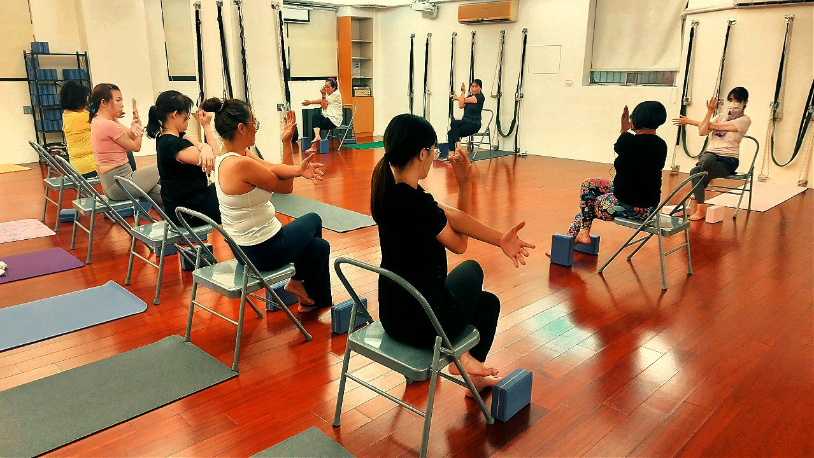

通勤坐著、站著或開車，怎麼安全微調姿勢？
公車一煞車，你抓緊扶手，肩膀跟著抬了一下。好不容易有位子坐，低頭回了幾則訊息，再抬頭時已經快到站，肩頸卻比出門時更累。
通勤時，可依身分選一項調整。坐著搭車時讓背靠得住、雙腳有支撐，站著搭車先抓穩扶手，再留意膝蓋是否繃住。駕駛可在出發前或安全停妥後調整座椅，讓方向盤和踏板都好操作。車在行進或等候號誌時，把注意力留給路況。

搭大眾運輸時，坐著和站著怎麼調整？
坐著時，可以在座位空間允許下把雙腳放穩，背靠椅背。站著時先抓穩扶手，在不妨礙他人的前提下找舒服的站距。若最有感的是一路低頭回訊息，可看低頭看手機時怎麼換個姿勢。
👆 手機版可左右滑動
| 通勤情境 | 優先調整 | 要留意的事 |
|---|---|---|
| 大眾運輸有座位 | 讓背靠椅背，雙腳有支撐。 | 下車前把注意力轉回周遭和車門。 |
| 大眾運輸站著搭車 | 先抓穩扶手，再找方便隨車身晃動調整的站距。 | 車廂加減速時以站穩為先。 |
| 自己開車 | 出發前或安全停妥後調整座椅。 | 行駛與停等時專注路況。 |
自己開車，什麼時候適合調整座椅？
在出發前或安全停妥後，確認視線清楚，方向盤和踏板好操作，並繫妥安全帶。通勤只佔一天的一段，如果到辦公室後還是很少離開椅子，可接著看坐了一整天，為什麼起身容易僵。
常見問題
站著搭車時，腳一定要平行嗎？
不用固定角度。先抓穩扶手，在空間允許時找方便因應晃動的站距。
等紅燈適合練姿勢嗎？
停等時仍須專注路況。等抵達或安全停妥後，再安排座椅調整或活動。
記下你最有感的時刻
先記下哪一段通勤最容易覺得肩膀累，或哪個座位一坐就想換姿勢。
免費約 2 分鐘，免登入、免加 LINE。做完可用 3 天觀察卡整理日常感受。
開始免費體態訊號掃描 →